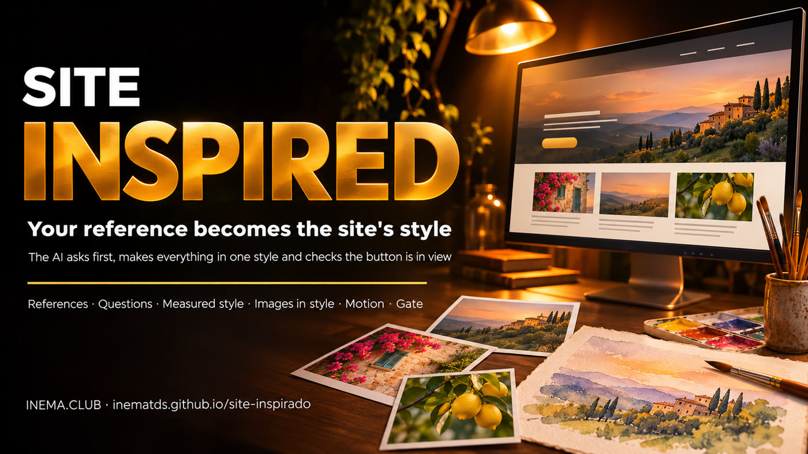
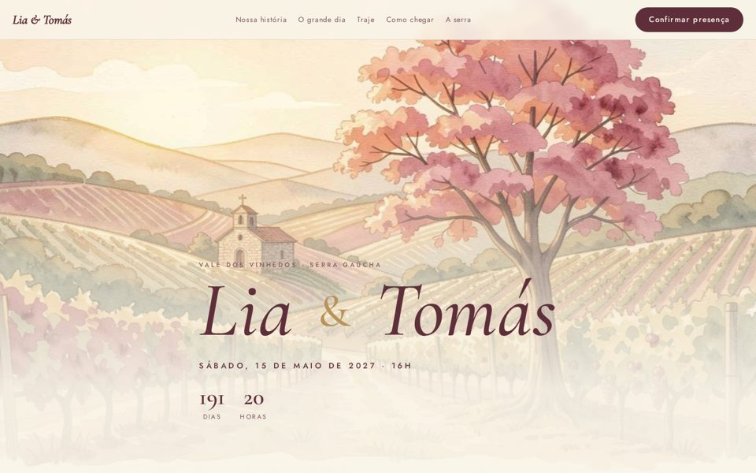
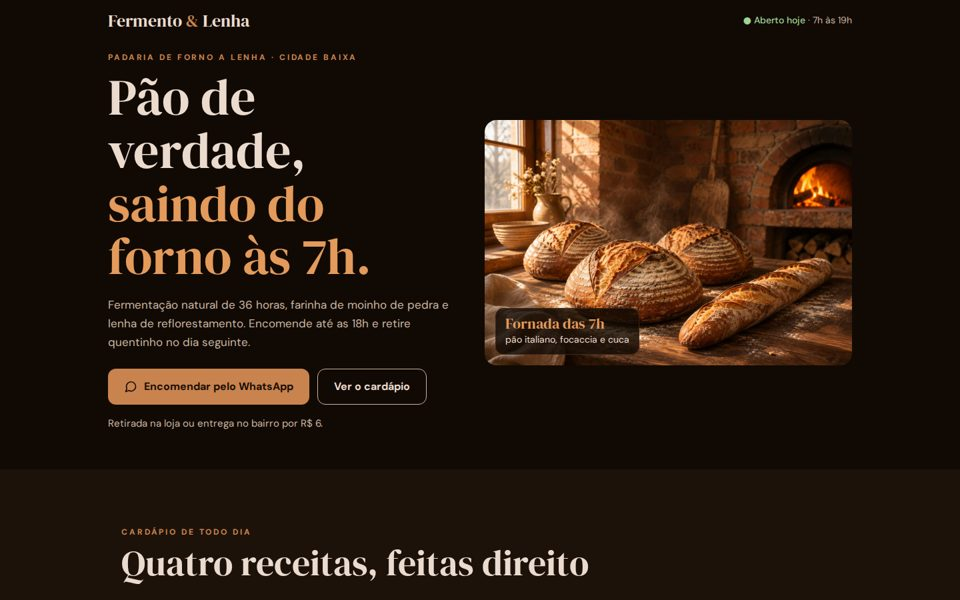

Gather 2 to 5 images you like. AI asks questions before generating, creates every image in the same style, builds the page with motion, and checks that visitors can still find the button.

site-inspirado is a kit with a skill for Claude Code that creates websites that don’t look “AI-made.” You provide reference images (from Pinterest, an invitation you’ve already printed, or a photo of your store), and AI asks questions and does research before generating anything. Then it measures the style of those images, uses Codex to generate website images in the same style, and builds the page with transitions. Finally, an automated test checks that the main button appears and the page works on mobile. You need Claude Code, Codex signed in with your subscription, Python, and Node.
Asking for “a nice website” gets you the same old site. Providing references, answering questions, and checking the result gives your site its own character.
A set of questions for each website type (event, business, service, portfolio). Anything the user doesn’t answer is researched or left out.
estilo.py extracts a palette from the references and calculates contrast. Every image uses the same style prompt and references.
portao.js opens the page on desktop and mobile, and blocks sites that hide the button, break, or ignore “reduce motion.”
A stage won’t begin until the previous one is approved. The guide below has 8 steps: install, these 6 stages (steps 2 to 7), and publish. The “gate” is the final automated test.
Everything runs on your machine. Images are generated through Codex with your subscription, without an API key.
Generates images with image_gen (Codex’s image generator), attaching the references. The script runs Codex without asking for confirmation for each image (--dangerously-bypass-approvals-and-sandbox): use it in a folder dedicated to the website.
# check codex login status
Measures the palette and creates the contact sheet.
python3 -c "import PIL"
Used only by the gate (headless browser).
cd skill/site-inspirado/scripts npm install && npx playwright install chromium
T is your website folder (one per site). S is the skill folder. You do steps 3 and 6 by chatting with Claude Code; the rest are terminal commands.
Clone the repository and link the skill to Claude Code. S and T are only set in the terminal where you created them: in a new terminal, run the third line again.
git clone https://github.com/inematds/site-inspirado mkdir -p ~/.claude/skills && ln -s "$PWD/site-inspirado/skill/site-inspirado" ~/.claude/skills/site-inspirado S=~/.claude/skills/site-inspirado; T=~/my-website; mkdir -p $T/refs
Put 2 to 5 images in $T/refs/: things you already have (an invitation, logo, or store photo) and inspiration (on Pinterest, search for “bakery website” or “watercolor wedding website”). An image of what you DON’T want can help too.
In Claude Code, open the skill and say the phrase that changes the result. Questions for each website type are in referencias/perguntas.md; answers go in $T/BRIEF.md, along with the type: negocio (the website exists to drive an action: ordering, booking) or visual (events, portfolios: can use more motion).
/site-inspirado "I want a website for my bakery. Before generating anything, ask me everything you need to know and research what a website of this type usually includes."
The script measures the reference palette and suggests a background, text, and accent color based on the calculated contrast. The style prompt describes technique, lighting, and colors.
python3 $S/scripts/estilo.py $T/refs $T/estilo.json --prompt "honest food photography, warm window light, dark walnut, terracotta" # estilo.json: 12 colors · background #110a04 · text #ebdbce (14.55:1) · accent #b07042
Write $T/plano.json (one line per image: nome, subject prompt, largura, altura). Each image uses the references and the first generated image as a model (the “anchor”), so the series looks like it came from the same hand. At the end, folha.jpg is created: a contact sheet with all the images side by side. Review it and regenerate anything that looks out of place. Ready-made example: pilotos/padaria/plano.json.
# plano.json: [{"nome": "hero", "prompt": "bread cooling on the table", "largura": 1536, "altura": 1024}, ...] python3 $S/scripts/imagens.py $T/plano.json $T/estilo.json $T/img --refs $T/refs python3 $S/scripts/imagens.py $T/plano.json $T/estilo.json $T/img --refs $T/refs --so croissant # regenerate one
Ask Claude Code: “build the page using the BRIEF, style, and images.” It designs a page for your subject and marks the main button (the CTA, the action you want visitors to take) with data-cta. Transitions come from movimento.js, using attributes: data-revela makes a block appear as it enters the screen, data-parallax makes an image move more slowly than the page scrolls, data-intro creates a short opening, data-conta counts a number, and data-contagem shows the days until a date. All motion stops when the system requests “reduce motion.” Copy movimento.js into the website folder before running the gate:
<section data-revela="cortina"> … rises | appears | side | zoom | curtain <img data-parallax="0.12"> <b data-conta="36"> <div data-intro="900"> <a data-cta href="#encomendar">Order</a> <script src="movimento.js"></script> cp $S/runtime/movimento.js $T/
Opens the page at 1440×900 and 390×844, with and without “reduce motion.” Publish only if it returns PASS.
node $S/scripts/portao.js $T/index.html --tipo negocio --fotos $T/fotos # desktop CTA above the fold: yes · CTAs: 3 · errors 0 # mobile CTA above the fold: yes · CTAs: 3 · errors 0 # PASS
The $T folder is already a complete static website. Push it to GitHub and enable Pages (or use Vercel or your client’s hosting).
cd $T && git init -b main && git add -A && git commit -m "site" gh repo create my-website --public --source=. --push gh api -X POST repos/<username>/my-website/pages -f "source[branch]=main" -f "source[path]=/"
Same kit, different references. Names, places, and prices are fictional. Click to open.


A website exists to help someone do something. The type in the BRIEF determines how much motion fits, and the gate measures it.
Button above the fold within 1.5 seconds, no opening animation, sticky mobile bar, up to 3 MB.
# bakery PASS
Opening of up to 1.2 seconds, curtain, parallax, and countdown; the button can come later, but it must appear. Up to 8 MB.
# event PASS
An opening that takes up one and a half screens, a button at the bottom, and endless animation. This is the tests/ruim.html test.
# ruim.html FAIL: CTA below the fold animation running with “reduce motion”
Items marked as done are in the repository and have been tested.
bash tests/rodar.sh).